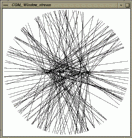
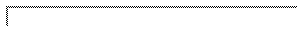

A variety of generators for random numbers and geometric objects is provided in CGAL. They are useful as synthetic test data sets, e.g. for testing algorithms on degenerate object sets and for performance analysis.
The first section describes the random number source used for random
generators. The second section provides useful generic functions
related to random numbers like CGAL_random_selection(). The
third section documents generators for two-dimensional point sets, the
fourth section for three-dimensional point sets. The fifth section
presents examples using functions from
Section  to generate composed objects
like segments.
to generate composed objects
like segments.
Note that the STL algorithm random_shuffle is useful in this context to achieve random permutations for otherwise regular generators (e.g. points on a grid or segment).
CGAL_random_selection chooses items at random from a random access iterator range which is useful to produce degenerate input data sets with multiple entries of identical items.
#include <CGAL/random_selection.h>
|
| ||||
|
|
| |||
|
chooses a random item from the range
firstlast
and writes it to result, each item from the range with equal
probability, and repeats this times, thus writing
items to result. A single random number is
needed from rnd for each item. Returns the value of
result after inserting the items.
Precondition: Random is a random number generator type as provided by the STL or by CGAL_Random. | ||||
Two kind of point generators are provided: First, random point
generators and second deterministic point generators. Most random
point generators and a few deterministic point generators are provided
as input iterators. The input iterators model an infinite sequence of
points. The function CGAL_copy_n() could be used to copy a
finite sequence, see Section  . The iterator adaptor
CGAL_Counting_iterator can be used to create finite iterator
ranges, see Section
. The iterator adaptor
CGAL_Counting_iterator can be used to create finite iterator
ranges, see Section  .
Other generators are provided as functions writing to an output
iterator. Further functions add degeneracies or random perturbations.
.
Other generators are provided as functions writing to an output
iterator. Further functions add degeneracies or random perturbations.
All iterators are parameterized with the point type P and all
with the exception of the class CGAL_Points_on_segment_2 have a second
template argument Creator which defaults to the class
CGAL_Creator_uniform_2<double,P>[^1].
The Creator must be a function object accepting two double
values and and returning an initialized point (x,y) of type
P. Predefined implementations for these creators like the
default can be found in Section  .
They simply assume an appropriate constructor for type P.
.
They simply assume an appropriate constructor for type P.
All generators know a range within which the coordinates of the generated points will lie.
#include <CGAL/point_generators_2.h>
| |||
|
is an input iterator creating points of type
P uniformly distributed in the open disc with radius
,
i.e. *g . Two
random numbers are needed from rnd for each point.
| |||
| |||
|
is an input iterator creating points of type
P uniformly distributed on the circle with radius
,
i.e. *g . A
single random number is needed from rnd for each point.
| |||
| |||
|
is an input iterator creating points of type
P uniformly distributed in the half-open square with side
length , centered at the origin,
i.e. *g
and . Two random numbers are
needed from rnd for each point.
| |||
| |||
|
is an input iterator creating points of type
P uniformly distributed on the boundary of the square with
side length , centered at the origin,
i.e. *g one
coordinate is either or and for the
other coordinate holds
. A single random number is
needed from rnd for each point.
| |||
| |||
|
is an input iterator creating points of type
P uniformly distributed on the segment from
to (excluding ),
i.e. *g
where . A single random
number is needed from rnd for each point.
Precondition: The expressions CGAL_to_double(p.x()) and CGAL_to_double(p.y()) must result in the respective double representation of the coordinates and similar for .
| |||
|
| |
|
is an input iterator creating points of type
P equally spaced on the segment from to
. points are placed on the segment
including and . The iterator denoted
the point where has the index 0 and
the index .
Precondition: The expressions CGAL_to_double(p.x()) and CGAL_to_double(p.y()) must result in the respective double representation of the coordinates and similar for .
| |
|
|
| returns the range in which the point coordinates lie, i.e. range() and range(). |
The generators CGAL_Random_points_on_segment_2 and CGAL_Points_on_segment_2 have to additional methods.
|
|
| returns the source point of the segment. |
|
|
| returns the target point of the segment. |
Grid points are generated by functions writing to an output iterator.
|
| ||||||
|
|
| |||||
|
creates the first points on the regular
grid
within the square . Returns the
value of after inserting the points.
Precondition: Creator must be a function object accepting two double values and and returning an initialized point (x,y) of type P. Predefined implementations for these creators like the default can be found in Section | ||||||
|
| ||||||
|
|
| |||||
| creates points equally spaced on the segment from to , i.e. . Returns the value of after inserting the points. | ||||||
Degenerate input sets like grid points can be randomly perturbed by a small amount to produce quasi-degenerate test sets. This challenges numerical stability of algorithms using inexact arithmetic and exact predicates to compute the sign of expressions slightly off from zero.
|
| ||||
|
|
| |||
|
perturbs the points in the range
firstlast
by replacing each point with a random point from the rectangle
xeps yeps centered at the
original point. Two random numbers are needed from rnd for
each point. Precondition: Creator must be a function object accepting two double values and and returning an initialized point (x,y) of type P. Predefined implementations for these creators like the default can be found in Section | ||||
For a given point set certain kinds of degeneracies can be produced
adding new points. The CGAL_random_selection() function is
useful to generate multiple entries of identical points, see
Section  . The
CGAL_random_collinear_points_2() function adds collinearities to
a point set.
. The
CGAL_random_collinear_points_2() function adds collinearities to
a point set.
|
| ||||||
|
|
| |||||
|
randomly chooses two points from the range
firstlast,
creates a random third point on the segment connecting this two
points, writes it to first2, and repeats this
times, thus writing points to first2 that are
collinear with points in the range
firstlast.
Three random numbers are needed from rnd for each point.
Returns the value of first2 after inserting the
points. Precondition: Creator must be a function object accepting two double values and and returning an initialized point (x,y) of type P. Predefined implementations for these creators like the default can be found in Section | ||||||
/* generators_prog1.C */
/* ------------------------------ */
/* CGAL example program for point generators. */
#include <CGAL/basic.h>
#include <assert.h>
#include <vector.h>
#include <algo.h>
#include <CGAL/Cartesian.h>
#include <CGAL/Point_2.h>
#include <CGAL/point_generators_2.h>
#include <CGAL/copy_n.h>
#include <CGAL/random_selection.h>
#include <CGAL/IO/Window_stream.h> /* only used for visualization */
typedef CGAL_Cartesian<double> R;
typedef CGAL_Point_2<R> Point;
typedef CGAL_Creator_uniform_2<double,Point> Creator;
int main()
{
/* Create test point set. Prepare a vector for 1000 points. */
vector<Point> points;
points.reserve(1000);
/* Create 600 points within a disc of radius 150. */
CGAL_Random_points_in_disc_2<Point,Creator> g( 150.0);
CGAL_copy_n( g, 600, back_inserter( points));
/* Create 200 points from a 15 x 15 grid. */
CGAL_points_on_square_grid_2( 250.0, 200, back_inserter(points),Creator());
/* Select 100 points randomly and append them at the end of */
/* the current vector of points. */
CGAL_random_selection( points.begin(), points.end(), 100,
back_inserter( points));
/* Create 100 points that are collinear to two randomly chosen */
/* points and append them to the current vector of points. */
CGAL_random_collinear_points_2( points.begin(), points.end(), 100,
back_inserter( points));
/* Check that we have really created 1000 points. */
assert( points.size() == 1000);
/* Use a random permutation to hide the creation history */
/* of the point set. */
random_shuffle( points.begin(), points.end(), CGAL_random);
/* Visualize point set. Can be omitted, see example programs */
/* in the CGAL source code distribution. */
CGAL_Window_stream W(512, 512);
W.init(-256.0, 255.0, -256.0);
W << CGAL_BLACK;
for( vector<Point>::iterator i = points.begin(); i != points.end(); i++)
W << *i;
/* Wait for mouse click in window. */
Point p;
W >> p;
return 0;
}
| Figure: Output of example program for point generators. |
The second example demonstrates the point generators with integer
points. Arithmetic with double's is sufficient to produce
regular integer grids. See Figure
 for the example output.
for the example output.
/* generators_prog2.C */
/* ------------------------------ */
/* CGAL example program for point generators creating integer points. */
#include <CGAL/basic.h>
#include <assert.h>
#include <vector.h>
#include <algo.h>
#include <CGAL/Cartesian.h>
#include <CGAL/Point_2.h>
#include <CGAL/point_generators_2.h>
#include <CGAL/copy_n.h>
#include <CGAL/IO/Window_stream.h> /* only for visualization used */
typedef CGAL_Cartesian<double> R;
typedef CGAL_Point_2<R> Point;
typedef CGAL_Creator_uniform_2<double,Point> Creator;
int main()
{
/* Create test point set. Prepare a vector for 400 points. */
vector<Point> points;
points.reserve(400);
/* Create 250 points from a 16 x 16 grid. Note that the double */
/* arithmetic _is_ sufficient to produce exact integer grid points. */
/* The distance between neighbors is 34 pixel = 510 / 15. */
CGAL_points_on_square_grid_2( 255.0, 250, back_inserter(points),Creator());
/* Lower, left corner. */
assert( points[0].x() == -255);
assert( points[0].y() == -255);
/* Upper, right corner. Note that 6 points are missing to fill the grid. */
assert( points[249].x() == 255 - 6 * 34);
assert( points[249].y() == 255);
/* Create 250 points within a disc of radius 150. */
CGAL_Random_points_in_disc_2<Point,Creator> g( 150.0);
CGAL_copy_n( g, 250, back_inserter( points));
/* Check that we have really created 500 points. */
assert( points.size() == 500);
/* Visualize point set. Can be omitted, see example programs */
/* in the CGAL source code distribution. */
CGAL_Window_stream W(524, 524);
W.init(-262.0, 261.0, -262.0);
W << CGAL_BLACK;
for( vector<Point>::iterator i = points.begin(); i != points.end(); i++)
W << *i;
/* Wait for mouse click in window. */
Point p;
W >> p;
return 0;
}
| Figure: Output of example program for point generators working on integer points. |

|
One kind of point generators is currently provided: Random point
generators implemented as input iterators. The input iterators model
an infinite sequence of points. The function CGAL_copy_n() could
be used to copy a finite sequence, see Section  . The
iterator adaptor CGAL_Counting_iterator can be used to create
finite iterator ranges, see Section
. The
iterator adaptor CGAL_Counting_iterator can be used to create
finite iterator ranges, see Section  .
.
All iterators are parameterized with the point type P and a second
template argument Creator which defaults to
CGAL_Creator_uniform_3<double,P>[^2].
The Creator must be a function object accepting three
double values , and and returning an initialized
point (x,y,z) of type P. Predefined implementations for
these creators like the default can be found in
Section  . They simply assume an
appropriate constructor for type P.
. They simply assume an
appropriate constructor for type P.
All generators know a range within which the coordinates of the generated points will lie.
#include <CGAL/point_generators_3.h>
| |||
|
is an input iterator creating points of type
P uniformly distributed in the open sphere with radius
,
i.e. *g .
| |||
| |||
|
is an input iterator creating points of type
P uniformly distributed on the boundary of a sphere with
radius ,
i.e. *g . Two
random numbers are needed from rnd for each point.
| |||
| |||
|
is an input iterator creating points of type
P uniformly distributed in the half-open cube with side
length , centered at the origin,
i.e. *g .
Three random numbers are needed from rnd for each point.
| |||
The following two examples illustrate the use of the generic functions
from Section  like
CGAL_Join_input_iterator to generate composed objects from other
generators - here two-dimensional segments from two point generators.
like
CGAL_Join_input_iterator to generate composed objects from other
generators - here two-dimensional segments from two point generators.
We want to generate a test set of 200 segments, where one endpoint is
chosen randomly from a horizontal segment of length 200, and the other
endpoint is chosen randomly from a circle of radius 250. See
Figure  for the example
output.
for the example
output.
/* Segment_generator_prog1.C */
/* ----------------------------------- */
/* CGAL example program for the generic segment generator. */
#include <CGAL/basic.h>
#include <assert.h>
#include <vector.h>
#include <algo.h>
#include <CGAL/Cartesian.h>
#include <CGAL/Point_2.h>
#include <CGAL/Segment_2.h>
#include <CGAL/point_generators_2.h>
#include <CGAL/function_objects.h>
#include <CGAL/Join_input_iterator.h>
#include <CGAL/copy_n.h>
#include <CGAL/IO/Window_stream.h> /* only for visualization used */
typedef CGAL_Cartesian<double> R;
typedef CGAL_Point_2<R> Point;
typedef CGAL_Creator_uniform_2<double,Point> Pt_creator;
typedef CGAL_Segment_2<R> Segment;
int main()
{
/* Create test segment set. Prepare a vector for 200 segments. */
vector<Segment> segs;
segs.reserve(200);
/* Prepare point generator for the horizontal segment, length 200. */
typedef CGAL_Random_points_on_segment_2<Point,Pt_creator> P1;
P1 p1( Point(-100,0), Point(100,0));
/* Prepare point generator for random points on circle, radius 250. */
typedef CGAL_Random_points_on_circle_2<Point,Pt_creator> P2;
P2 p2( 250);
/* Create 200 segments. */
typedef CGAL_Creator_uniform_2< Point, Segment> Seg_creator;
typedef CGAL_Join_input_iterator_2< P1, P2, Seg_creator> Seg_iterator;
Seg_iterator g( p1, p2);
CGAL_copy_n( g, 200, back_inserter( segs));
/* Visualize segments. Can be omitted, see example programs */
/* in the CGAL source code distribution. */
CGAL_Window_stream W(512, 512);
W.init(-256.0, 255.0, -256.0);
W << CGAL_BLACK;
for( vector<Segment>::iterator i = segs.begin(); i != segs.end(); i++)
W << *i;
/* Wait for mouse click in window. */
Point p;
W >> p;
return 0;
}
| Figure: Output of example program for the generic segment generator. |  |
The second example generates a regular structure of 100 segments, see
Figure  for the example
output. It uses the CGAL_Points_on_segment_2 iterator,
CGAL_Join_input_iterator_2 and CGAL_Counting_iterator to
avoid any intermediate storage of the generated objects until they are
used, in this example copied to a window stream.
for the example
output. It uses the CGAL_Points_on_segment_2 iterator,
CGAL_Join_input_iterator_2 and CGAL_Counting_iterator to
avoid any intermediate storage of the generated objects until they are
used, in this example copied to a window stream.
/* Segment_generator_prog2.C */
/* ------------------------------------- */
/* CGAL example program generating a regular segment pattern. */
#include <CGAL/basic.h>
#include <algo.h>
#include <CGAL/Cartesian.h>
#include <CGAL/Point_2.h>
#include <CGAL/Segment_2.h>
#include <CGAL/point_generators_2.h>
#include <CGAL/function_objects.h>
#include <CGAL/Join_input_iterator.h>
#include <CGAL/Counting_iterator.h>
#include <CGAL/IO/Ostream_iterator.h>
#include <CGAL/IO/Window_stream.h>
typedef CGAL_Cartesian<double> R;
typedef CGAL_Point_2<R> Point;
typedef CGAL_Segment_2<R> Segment;
typedef CGAL_Points_on_segment_2<Point> PG;
typedef CGAL_Creator_uniform_2< Point, Segment> Creator;
typedef CGAL_Join_input_iterator_2< PG, PG, Creator> Segm_iterator;
typedef CGAL_Counting_iterator<Segm_iterator,Segment> Count_iterator;
int main()
{
/* Open window. */
CGAL_Window_stream W(512, 512);
W.init(-256.0, 255.0, -256.0);
W << CGAL_BLACK;
/* A horizontal like fan. */
PG p1( Point(-250, -50), Point(-250, 50),50); /* Point generator. */
PG p2( Point( 250,-250), Point( 250,250),50);
Segm_iterator t1( p1, p2); /* Segment generator. */
Count_iterator t1_begin( t1); /* Finite range. */
Count_iterator t1_end( 50);
copy( t1_begin, t1_end,
CGAL_Ostream_iterator<Segment,CGAL_Window_stream>(W));
/* A vertical like fan. */
PG p3( Point( -50,-250), Point( 50,-250),50);
PG p4( Point(-250, 250), Point( 250, 250),50);
Segm_iterator t2( p3, p4);
Count_iterator t2_begin( t2);
Count_iterator t2_end( 50);
copy( t2_begin, t2_end,
CGAL_Ostream_iterator<Segment,CGAL_Window_stream>(W));
/* Wait for mouse click in window. */
Point p;
W >> p;
return 0;
}
| Figure: Output of example program for the generic segment generator using pre-computed point locations. |

|
\cgalColumnLayout
This section describes a function to compute a random convex planar point set of given size where the points are drawn from a specific domain.
#include <CGAL/random_convex_set_2.h>
|
| ||||||
|
|
| |||||
| computes a random convex n-gon by writing its vertices (oriented counterclockwise) to o. The resulting polygon is scaled such that it fits into the bounding box as specified by pg. Therefore we cannot easily describe the resulting distribution. | ||||||
#include <CGAL/Cartesian.h>
#include <CGAL/point_generators_2.h>
#include <CGAL/random_convex_set_2.h>
#include <CGAL/IO/Window_stream.h>
#include <CGAL/IO/Ostream_iterator.h>
int main() {
typedef CGAL_Cartesian< double > R;
typedef CGAL_Point_2< R > Point_2;
typedef CGAL_Random_points_in_square_2<
Point_2,
CGAL_Creator_uniform_2< double, Point_2 > >
Point_generator;
// create 500-gon and write it into a window:
CGAL_Window_stream W;
W.init( -0.55, 0.55, -0.55);
CGAL_random_convex_set_2(
500,
CGAL_Ostream_iterator< Point_2, CGAL_Window_stream >( W),
Point_generator( 0.5));
// wait for mouse-click:
Point_2 p;
W >> p;
}


{kind=link}
{kind=link}